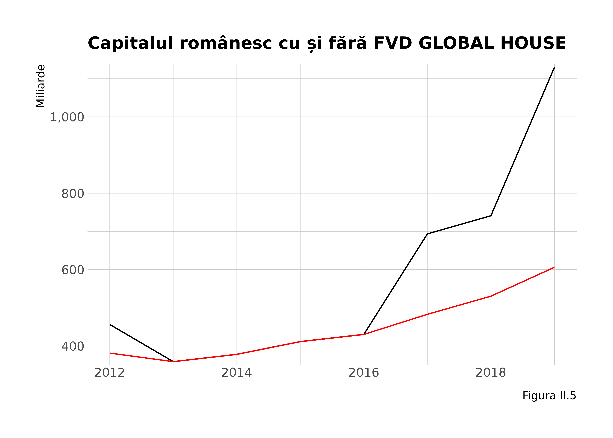
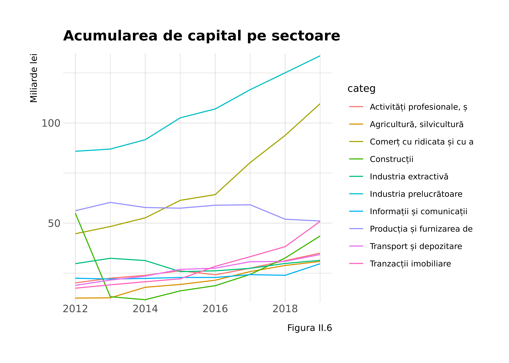
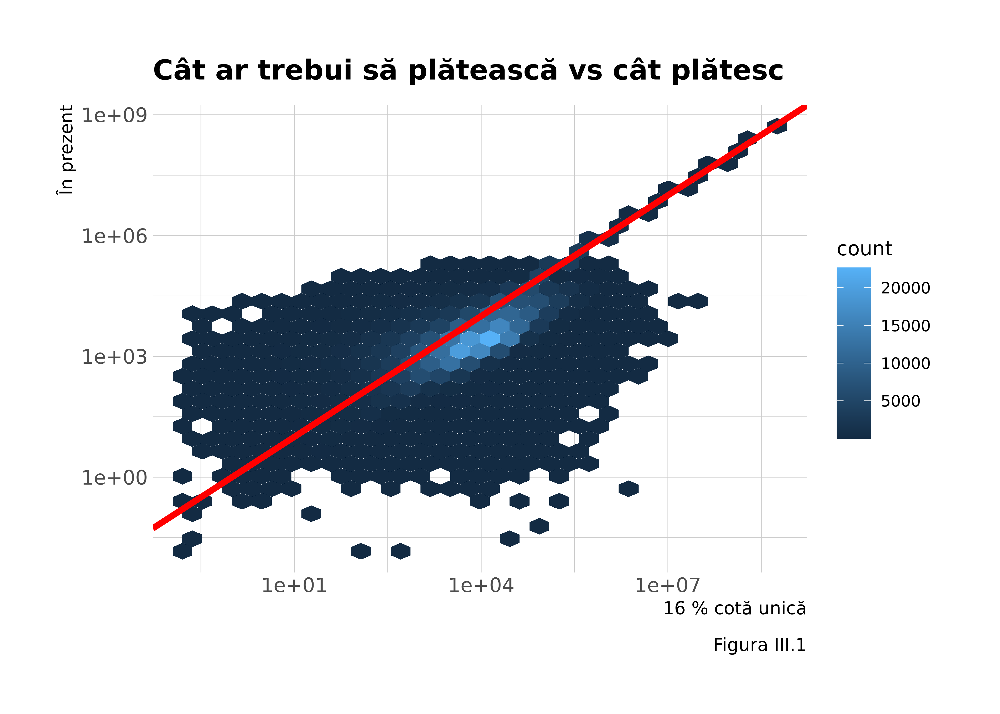
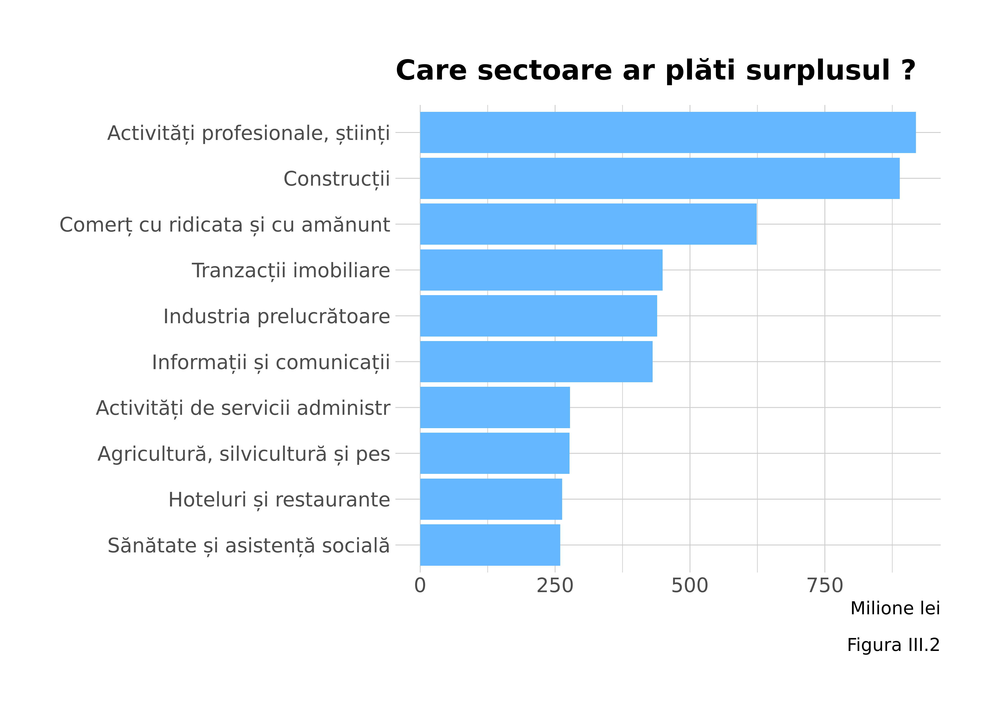

O analiză a firmelor din România
2021-05-31
Capitol 1 Imaginea de ansamblu
În acest document vom explora câteva caracteristici importante ale bilanțurilor agenților economici (firme și PFA-uri) care activează în România, publicate de stat pe portalul de date deschise data.gov.ro. Au fost adunate toate datele începând cu anul 2012 până în 2019 (ultimul pentru care sunt publicate datele). Au fost excluse firmele de asigurări, investiții financiare, bănci, ca atare analiza se va axa pe mediul economic (antreprenorial) nefinanciar. Vom releva câteva fapte-cheie despre mediul economic românesc puțin cunoscute cât și curiozități greu de explicat, unele ridicând întrebări asupra procesului de colectare a acestor date, iar altele asupra politicilor fiscale mai recente care par a fi văduvit bugetul de o porțiune din veniturile sale. Toate aceste elemente vor fi analizate separat.
Setul de date asamblat din fișierele disponibile pe portal însumează 5569780 linii și 30 coloane, având în medie în jur de 700.000-800.000 de entități economice per an. Dacă acest număr nu este complet, el reprezintă oricum marea majoritate a firmelor existente în România, număr care după unele surse se află la un pic peste un milion, în altele la în jur de 6-700.000. Probabil că numărul real este greu de știut cu certitudine. De asemenea, presa financiară abundă de calcule și estimări care mai de care mai contradictorii cu privire la multe chestiuni pe care le va analiza și articolul de față.
Unele cifre înregistrate în aceste fișiere par a fi din start greșite - câteva firme care “angajează” câteva zeci de mii sau unele chiar milioane de salariați, pe când altele sunt doar problematice. În această categorie intră de exemplu firma FVD GLOBAL HOUSE S.A. al cărei capital se ridică la aproximativ un sfert din totalul capitalului firmelor din acest set - adică al firmelor din România. Această valoare pare fantastică și nu este clar ce active circulante deține această firmă de consultanță financiară, totuși valoarea pare a fi luată de bună inclusiv de siteurile comerciale de profil ca listafirme.ro sau termene.ro. Aceste valori aberante deformează indicatorii calculați la nivelul întregii țări dacă acest lucru se face fără grijă.
O altă particularitate a setului de date este numărul mare de agenți economici fără niciun salariat - fie pentru că în unele cazuri statul nu cunoaște numărul lor real, fie pentru că el e trecut chiar ca zero. Astfel, aproximativ 43 % din entitățile economice din acest set au zero salariați. Ele sunt PFA-uri, firme de familie, firme care angajează la negru, etc. Să vedem cum sunt distribuite firmele în categorii de mărime (după numărul de salariați) și din ce sectoare de activitate fac ele parte.

Conform graficului din figura I.1 avem un an interesant, 2015, în care aproximativ un sfert din firmele României au rămas fără angajatul sau puținii angajați pe care-i aveau, pentru a-i recupera anul viitor. În ce măsură este acest lucru un artefact de înregistrare a datelor sau un fenomen economic real, mărturisesc că nu pot răspunde. Un lucru e clar din imagine: excluzând anul 2015, în general 45-50 % din firmele României au 0 salariați, iar cele cu 1-3 salariați reprezintă și ele încă 30-35 %. Sub 20 % din firme au peste 3 salariați și, mai interesant, doar 1.3-1.4 % din firme au peste 50 de salariați. Niciodată acest procent nu depășește 1.5 % din totalul firmelor. S-ar părea că numărul de întreprinderi mijlocii și mari în România este de ordinul sutelor !
Un alt lucru demn de investigat este distribuția firmelor pe sectoare de activitate.

Comerțul este sectorul de activitate predominant de departe, cu peste 200.000 de firme, urmat de activități profesionale și construcții, apoi industrie prelucrătoare, transporturi și depozitare, HoReCa, etc. Pentru a desluși mai bine “misterul” firmelor fără niciun angajat, vom vizualiza distribuția numărului de firme pe sectoare și categorii de mărime sub forma tabelului din figura I.3.
| Sector | Număr salariați | |||||
|---|---|---|---|---|---|---|
| 0 | 1-3 | 3-10 | 10-50 | 50-1000 | peste 1000 | |
| Activități ale organizațiilor și organismelor extrateritoriale | 18 | 8 | 4 | 10 | 2 | 0 |
| Activități de servicii administrative și activități de servicii suport | 13907 | 11126 | 3075 | 2185 | 807 | 34 |
| Activitați de spectacole, culturale și recreative | 8055 | 5179 | 872 | 370 | 127 | 6 |
| Activități profesionale, științifice și tehnice | 41488 | 35071 | 6204 | 1920 | 351 | 6 |
| Administrație publică și apărare; asigurări sociale din sistemul public | 71 | 46 | 19 | 26 | 20 | 1 |
| Agricultură, silvicultură și pescuit | 10495 | 8573 | 4248 | 2073 | 244 | 3 |
| Alte activități de servicii | 9204 | 8498 | 2507 | 473 | 62 | 0 |
| Comerț cu ridicata și cu amănuntul; repararea autovehiculelor și motocicletelor | 93338 | 82547 | 25601 | 10289 | 1548 | 37 |
| Construcții | 30465 | 27291 | 12079 | 6243 | 974 | 5 |
| Distribuția apei; salubritate, gestionarea deșeurilor, activități de decontaminare | 1261 | 1188 | 623 | 447 | 202 | 10 |
| Hoteluri și restaurante | 14873 | 11936 | 5372 | 3426 | 392 | 2 |
| Industria extractivă | 557 | 364 | 200 | 241 | 66 | 4 |
| Industria prelucrătoare | 27373 | 22366 | 10166 | 8074 | 3127 | 120 |
| Informații și comunicații | 17142 | 12069 | 2273 | 1332 | 402 | 28 |
| Intermedieri financiare și asigurări | 5401 | 3615 | 638 | 276 | 48 | 0 |
| Învățământ | 4208 | 3166 | 1073 | 289 | 10 | 0 |
| Producția și furnizarea de energie electrică și termică, gaze, apă caldă și aer condiționat | 1338 | 455 | 125 | 87 | 64 | 17 |
| Sănătate și asistență socială | 8283 | 9461 | 2622 | 941 | 137 | 5 |
| Transport și depozitare | 21725 | 29463 | 7774 | 3317 | 669 | 19 |
| Tranzacții imobiliare | 13732 | 8525 | 1438 | 515 | 61 | 1 |
Din acest tabel observăm că firmele fără salariați declarați există mai în toate sectoarele economiei, mai ales în cele în care ne-am aștepta cel mai mult dat fiind faptul că sunt populate cel mai adesea de PFA. Ce e de mirare e că și cele mai multe firme din industria prelucrătoare și chiar a construcțiilor fac parte din această categorie. E greu de crezut că se poate explica altfel decât prin evaziune fiscală și muncă la negru. Să vedem numărul firmelor care declară pierderi (în loc de profit) de-a lungul anilor.

Astfel chiar și în vârful boomului economic din 2019, 43 % din firmele țării declarau pierdere ! În mediul economic românesc există o binecunoscută concentrare a puterii economice într-o mână de firme foarte mari, majoritatea de proveniență străină. Trendul este relativ constant de-a lungul anilor, iar pentru anul 2019, primele 10 firme după cifra de afaceri (a zecea fiind chiar Dedeman) au obținut 8.44 % din totalul cifrei de afaceri la nivel național. Primele 100 de firme concentrează 26 % din total, iar primele 1000 de firme concentrează 48 % iar primele 10.000 74 %. Firma cu cea mai mare cifră de afaceri este Automobile-Dacia SA, urmată de OMV PETROM SA și Kaufland. Comerțul și industria prelucrătoare alcătuiesc împreună 700 din primele 1000 de firme ordonate după cifra de afaceri. Câteva din activitățile categorisite ca industrie prelucrătoare: fabricarea altor piese și accesorii pentru autovehicule, fabricarea de echipamente electrice și elecronice pentru autovehicule, fabricarea produselor din carne, producția de metale feroase sub forme primare și de feroaliaje, fabricarea altor echipamente electrice, fabricarea de echipamente electrocasnice, etc. Acesta este profilul economiei românești.
Cât de profitabile sunt aceste firme ? Vom analiza în detaliu separat aspectele legate de profitabilitate, dar pentru moment vom vizualiza distribuția profitului net pe categorii de salariați. Imaginea este sugestivă: deși firmele cele mai mari obțin cele mai mari profituri, chiar și câteva dintre cele mai mici, cu zero angajați, obțin profituri de peste 100 de milioane de lei, tipice pentru top 25 % din firmele cele mai mari. E o plajă foarte variată a profitabilității pentru firmele mici, dar relativ restrânsă pentru cele mari. Relație similară există și pentru cifra de afaceri.
Instructivă ar fi o analiză a profitului net versus cel brut, pentru a observa dacă există grupuri distincte de firme.

Linia roșie trasează relația de egalitate între cele două. Observând mai atent, sunt firme care declară profit net mai mare decât brut, mai exact 72 de firme. Mai observăm că firmele mici au cea mai mare variabilitate și abatere de la linie, ceea ce se traduce în cel mai mare procent de cheltuieli deductibile sau neprevăzute. Sau poate cea mai mare evaziune. Să vededm cum stau firmele la capital.

Observăm că peste 50 % din firmele cu zero salariați au capital negativ, deși numărul a fost în scădere de la Marea Criză încoace. Cu cât firma e mai mare, cu atât procentul firmelor cu capital negativ e mai mic. Ar fi interesant de investigat dacă firmele cu zero salariați cu capital negativ sunt aceleași cu cele care declară pierderi. Răspunsul este complex: 22.3 % din firmele cu capital pozitiv declară pierderi oricum, versus 82 % firme cu capital negativ. Se pare că variabila este un important predictor al profitabilității firmei.